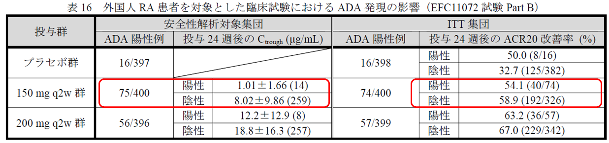

left
社外秘 研修資料
right
参考：KEV投与下のADA発現（審査報告書；海外データ）

・
MOBIRITY試験では、MTX併用にも関わらず150mgで19%（75/400例）、200mgで14%（56/396例）にADAが発現している。
・
右表のACR20改善率はADA発現有無に関係が無い。
しかし、左表のトラフ濃度を見ると150mgADA陽性群のほうが陰性群よりも低い。
⇒
抗体発現と有効性に影響がある可能性？
KEV審査報告書